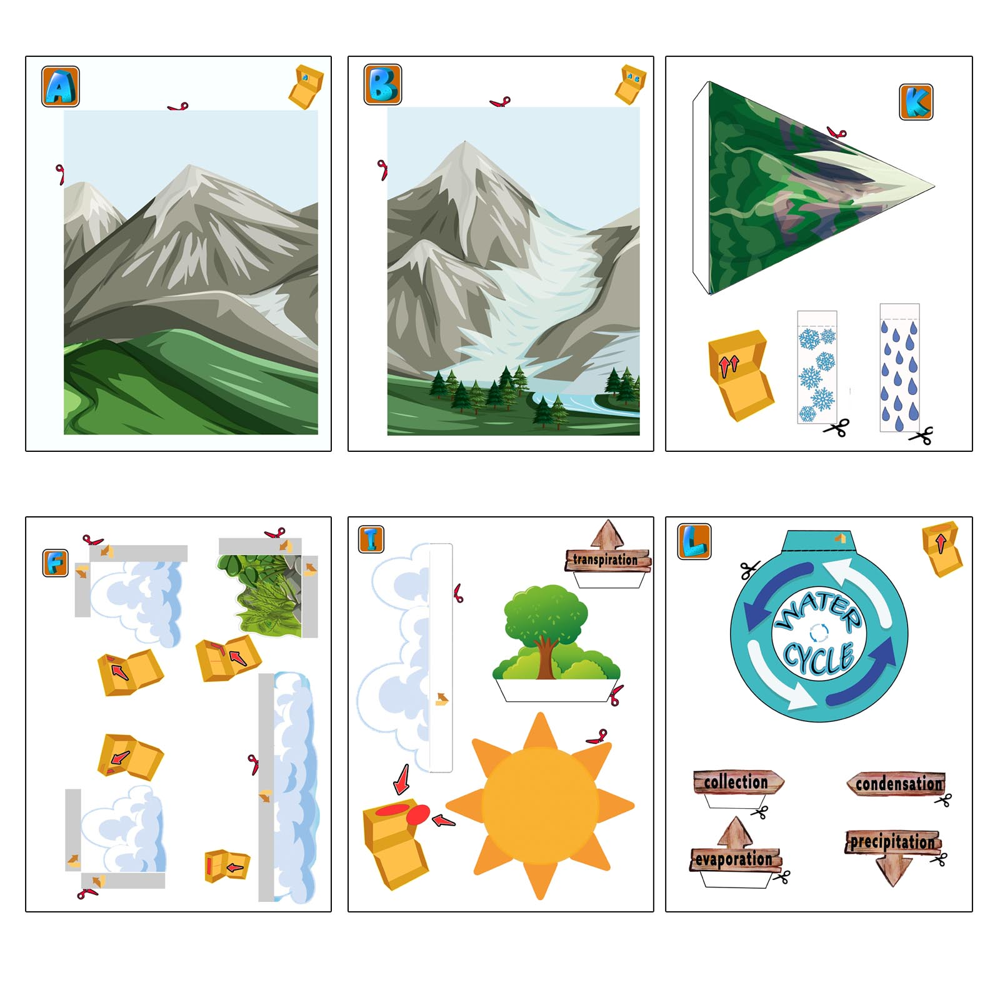
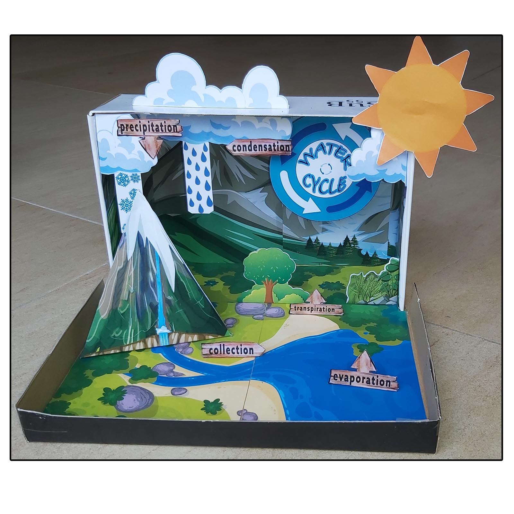
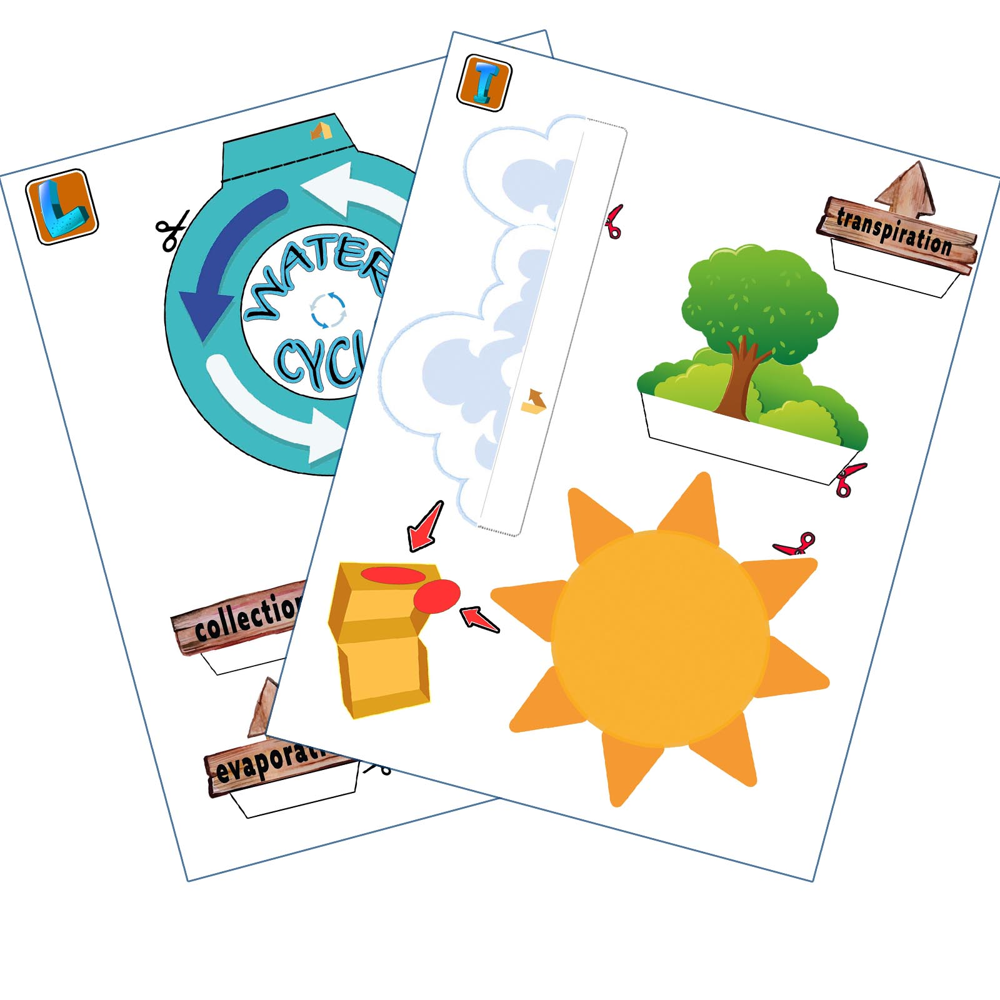
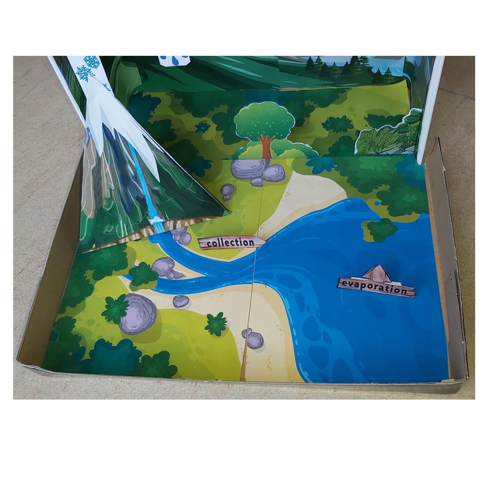
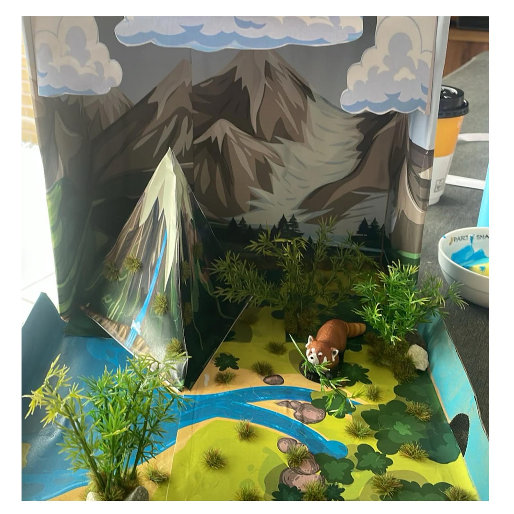
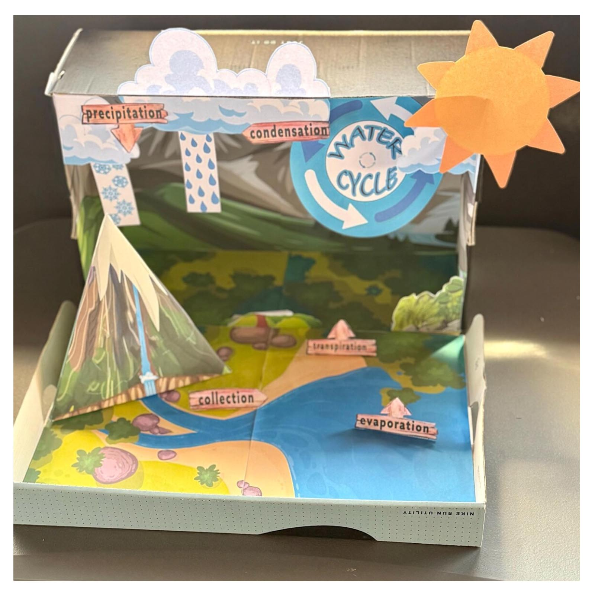
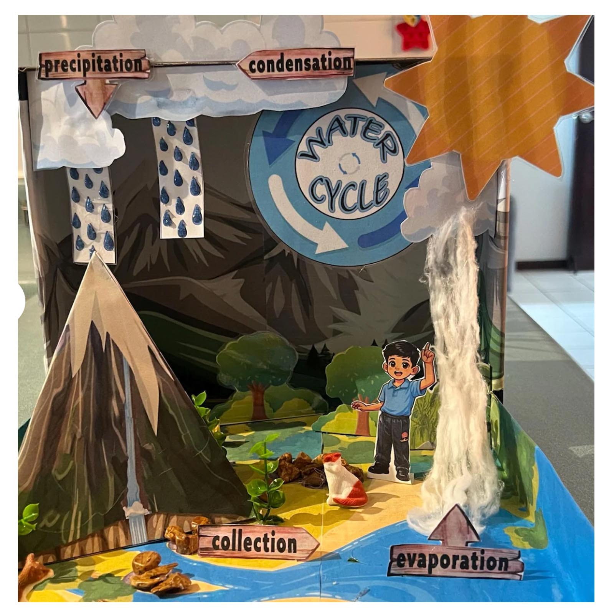
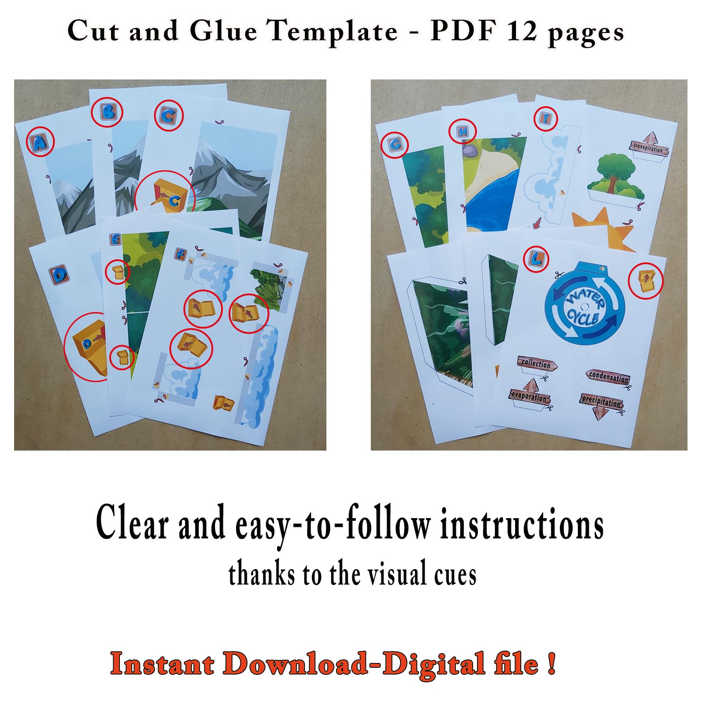

1. Print the templates
Print the illustrated pages using the settings in the PDF instructions.

Build a 3D water cycle model inside a shoebox, with mountains, clouds and labelled stages to explore. This printable water cycle diorama turns a science topic into a hands-on paper project.
Get the Printable PDF on EtsyDigital download · Print and assemble yourself · No physical model shipped
A flat water cycle diagram shows how the stages connect. This shoebox model adds depth: mountains rise in front of the background, clouds hang above the landscape and labels help children explain what is happening.
Use the finished diorama for a school science project, a homeschool lesson or a creative activity at home. Children can point to each stage and describe the journey in their own words.
Prepare a printer, paper, scissors, glue and a shoebox or similar cardboard box. Read the supplied instructions before printing and assembly. Younger children may need help with cutting.
See Etsy for the current price and download details.
Get the Printable PDF on Etsy
Print the illustrated pages using the settings in the PDF instructions.

Prepare the backgrounds, scenery and labels before arranging the layers.

Fit the scenery inside your box and glue the layers in position, following the supplied guide.
Take a closer look at the printable water cycle project in this short video.
These student examples show how extra plants, textures and craft materials can change the finished scene. These additions are inspiration, rather than extra physical supplies included with the PDF.




Try starting with: “My model shows how water moves between the land, water and air.” Then point to evaporation, condensation and precipitation, using the labels as prompts.
Ask where the sun provides energy and how plants take part. Children can trace more than one route through the landscape: the real water cycle has many connected paths.
This is a paper display, not a working water experiment. Check your teacher’s requirements before choosing it for an assignment.
No. You purchase a digital PDF on Etsy, then print and build the model yourself. A box and craft supplies are not included.
It is a labelled water cycle diagram arranged as a layered 3D shoebox diorama. The scenery gives depth to the illustrated processes.
Use the Etsy buttons on this page. Payment and delivery of the digital file are handled through Etsy.
Yes. The printed pieces provide a starting point. Extra plants, textures and scenery can make each model different.
Print the templates, prepare your shoebox and turn a water cycle diagram into a model you can explain.
Get the Printable PDF on Etsy12-page digital PDF · Purchase and download through Etsy